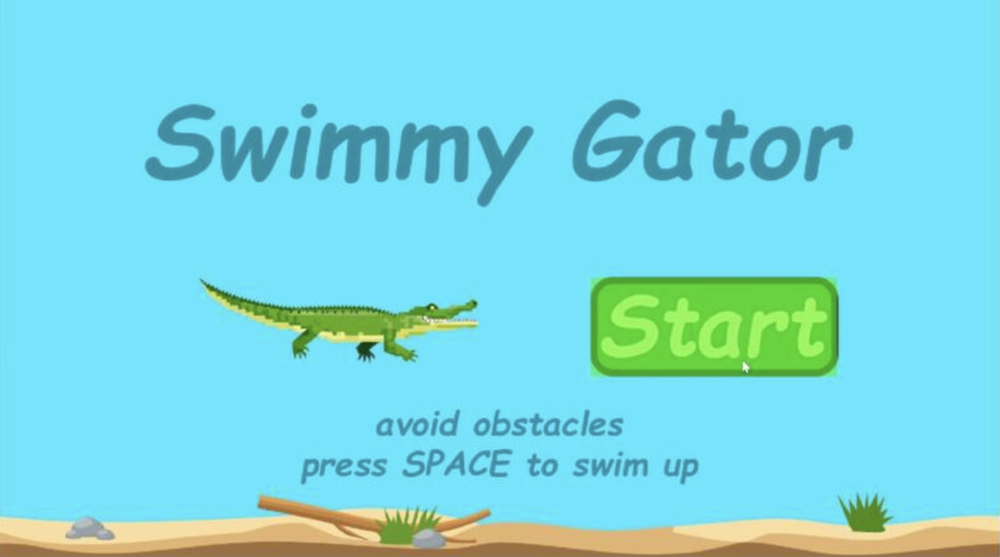
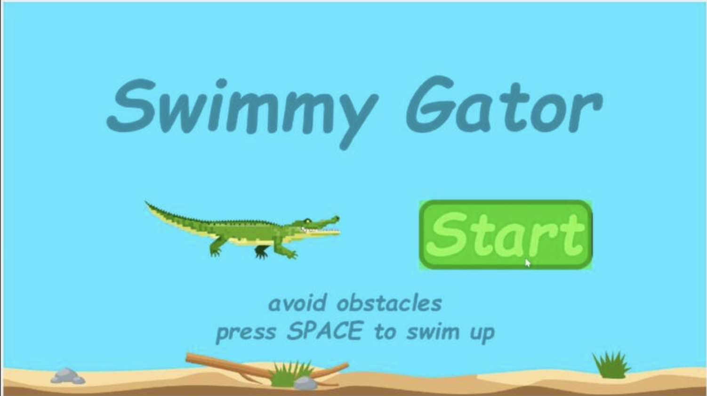
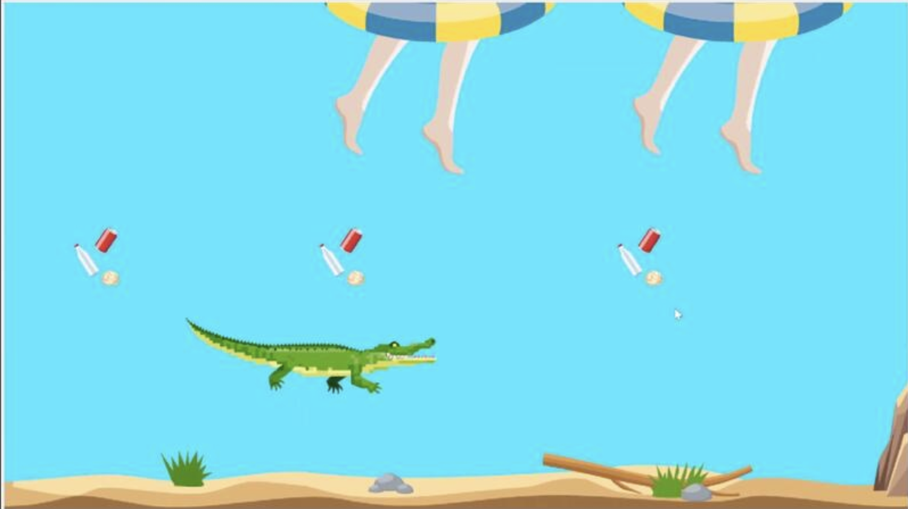
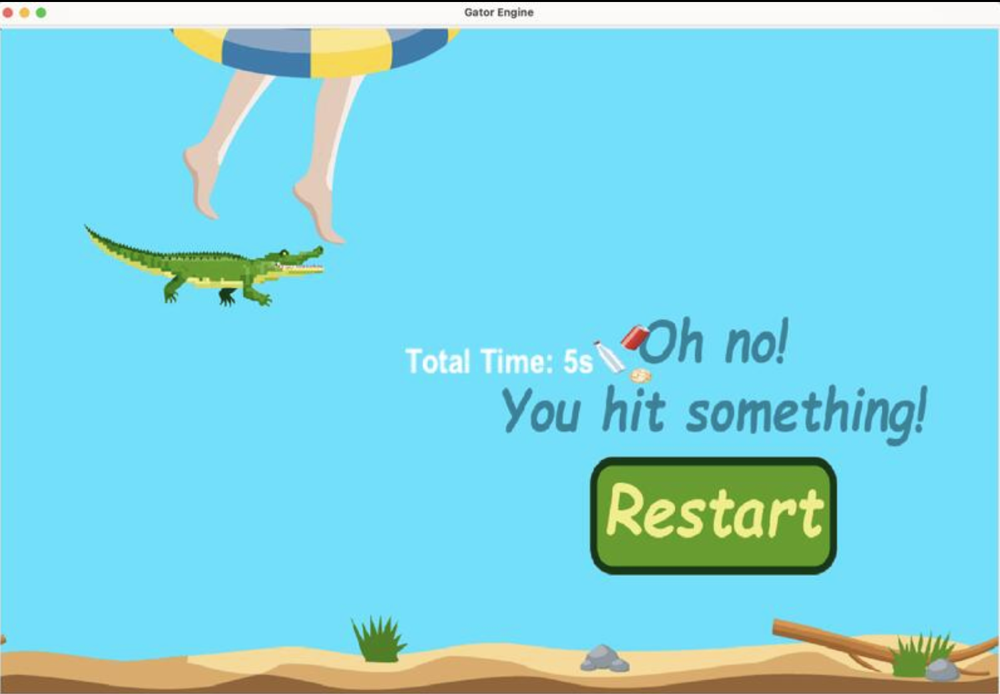
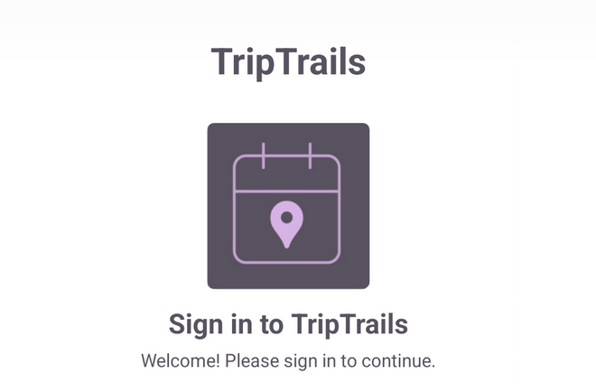

Check out some of my work
Developed full-stack projects integrating front-end and back-end technologies to deliver seamless user experiences and robust functionality.

Swimmy Gator
Java
Object-Oriented Programming (OOP)
Game Design
A 2D game built with Java using the Gator Engine, featuring physics-based player movement, dynamic obstacle spawning, and multi-view game states.
Click to learn more →Swimmy Gator
Java
Game Design
Object-Oriented Programming (OOP)
- Designed and implemented a 2D game using the provided Gator Engine. Developed a menu and view system with a start menu view, in-game view, and end-game popup view, featuring clickable and hover-responsive buttons that link seamlessly between views.
- Implemented player movement mechanics using physics-based principles, including gravity and impulse forces, allowing players to control the gator character via key input (spacebar).
- Programmed dynamic obstacle spawning and behavior, ensuring obstacles are generated at varying frequencies and positions. Created a scrolling background synchronized with obstacle movement to maintain visual consistency and enhance the immersive experience.
- Utilized technical skills in object-oriented programming, game physics, and event-driven development to enhance the Gator Engine and deliver a polished final product.
Game Screens

The Start Screen
This is where the adventure begins. The start screen welcomes players with its clean, aquatic-themed interface. There is some instruction to teach users to play the game (Avoid obstacles by pressing SPACE). The "Start" button highlights when the mouse hovers over it. Users can press the "Start" button to begin the game.

The Gameplay Screen
The Swimmy Gator is constantly pulled downwards by gravity, so the player needs to press SPACE at the right time to make it swim upwards and stay afloat. The player must both fight against the downward pull of gravity and avoid obstacles. The longer the player survives, the faster the background and obstacles move, increasing the difficulty and demanding faster reaction times from the player.

The Game Over Screen
The game can end due to hitting an obstacle or sinking to the bottom of the water due to gravity. This screen appears whenever Swimmy Gator's adventure ends. A message and a "Restart" button will be displayed on the screen. Players can simply click this button to instantly reset the game and seamlessly return to the start screen.

UF-Wildlife 🐊
Angular
Golang
Full-Stack
TypeScript
HTML
CSS
A community-driven web platform for University of Florida students and faculty to record, share, and explore campus wildlife through an interactive map.
Click to learn more →UF-Wildlife 🐊
Angular
Golang
Full-Stack
- UF-Wildlife is a community-driven web platform that allows University of Florida students and faculty to record, share, and explore the animals found on campus.
- The project follows a separated frontend–backend architecture, using Angular for the frontend and Go (Golang) for the backend API.
Project Overview

UFwildlife brings campus to life through an interactive map where students capture and share the animals they meet every day in different seasons. Upload a photo, drop a pin, and tell your story — then explore what others have discovered across campus. It's more than a map; it's a shared memory that Gators have tucked into every corner of campus.
This project is developed by a small software engineering team as a full-stack web application.

TripTrails ✈️
React Native
Android Studio
TypeScript
Mobile Dev
Google Maps API
A cross-platform Android travel planning app featuring interactive maps, route planning, and a calendar dashboard for seamless trip management.
Click to learn more →TripTrails ✈️
React Native
TypeScript
JavaScript
Expo
Android Studio
Google Maps API
- Collaborated with team members to transform UI/UX wireframes and prototypes in Figma into fully functional cross-platform mobile applications. Developed front-end user interfaces using TypeScript and JavaScript with React Native, ensuring users have premium experiences.
- Integrated Google Maps API to deliver interactive map views, location recommendations, and route planning capabilities. Implemented a calendar dashboard UI enabling users to effortlessly view, add, delete, edit, and enabled iCal format support for calendar sharing. Significantly enhanced the convenience and practicality of travel planning while optimizing the user experience for schedule management.
- Architected and developed a full-stack mobile solution using Expo to manage project configuration and simplify the build process. Utilized Android Studio as the primary IDE for advanced debugging, performance profiling, and emulator management, significantly improving development efficiency and ensuring optimal resource utilization.
- Applied ESLint and Prettier for maintaining high code quality and consistent formatting standards. Utilized Jest for unit testing, reducing communication overhead in team collaboration, and ensuring the app's functionality, robustness, and reliability across different user workflows.